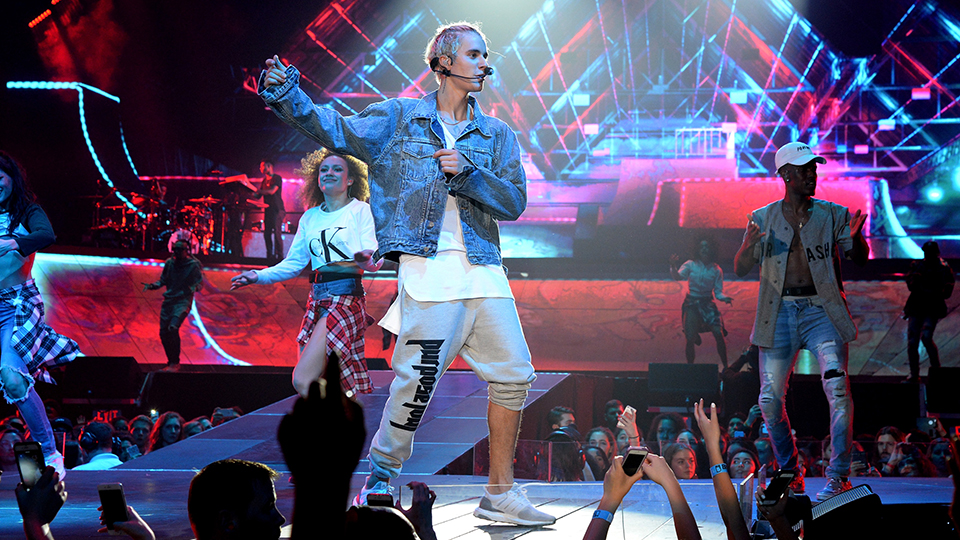

PURPOSE WORLD TOUR
Purpose World Tour is the third worldwide tour by Justin Bieber. It was launched in support of his fourth studio album, Purpose. The tour is set to begin on March 9, 2016 in Seattle, Washington. The tour will continue through July 19, stopping at various cities in North America. Although it has yet to be confirmed, it is probable that Bieber will extend the tour to other continents.
Background
The tour was announced on November 11, 2015 on The Ellen DeGeneres Show. That same day, 58 dates in the United States and Canada were revealed on the singer's website. Due to an overwhelming demand, additional shows were added in Los Angeles, Atlanta, Philadelphia, Boston, Miami, and New York, totaling 64 shows. Some of the shows that Bieber was supposed to perform at was cancelled. After a couple of days, Bieber announced the reason behind him cancelling the rest of the tour on a heartfelt Instagram post.
Intro
My life is a movie and everyone’s watching. So let’s get to the good part and past all the nonsense. This life’s not easy. I know what it feels like to fall. It isn’t until we admit defeat that we are able to find strength. I know what it takes to admit vulnerabilities. Are you willing to be challenged, uncomfortable? What are you willing to withstand to create your destiny? I have to ask myself where does my character lie in times of trouble, my weakness, when is my soul at rest? I encountered so many obstacles along this journey. I made mistakes, stumbled but I have faith and determination to rise. My idea of advice is safety, love, respect and purpose.